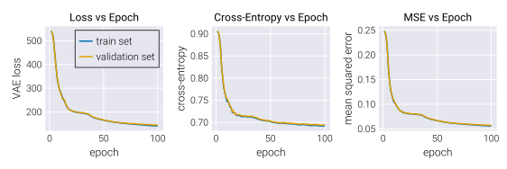
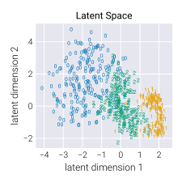

Quick Start
In this guide we will use external packages with functions not directly related to AutoEncoderToolkit.jl. such as Flux.jl and MLDatasets.jl. Make sure to install them before running the code if you want to follow along.
For this quick start guide, we will prepare different autoencoders to be trained on a fraction of the MNIST dataset. Let us begin by importing the necessary packages.
We prefer to load functions using the import keyword instead of using. This is a personal preference and you can use using if you prefer.
# Import project package
import AutoEncoderToolkit as AET
# Import ML libraries
import Flux
# Import library to load MNIST dataset
using MLDatasets: MNIST
# Import library to save models
import JLD2Now that we have imported the necessary packages, we can load the MNIST dataset. For this specific example, we will only use digits 0, 1, and 2, taking 10 batches of 64 samples each. We will also use 2 batches with the same number of samples for validation.
# Define number of samples in batch
n_batch = 64
# Define total number of data points
n_data = n_batch * 10
# Define number of validation data points
n_val = n_batch * 2
# Define lables to keep
digit_label = [0, 1, 2]
# Load data and labels
data, labels = MNIST.traindata(
; dir="your_own_custom_path/data/mnist"
)
# Keep only data with labels in digit_label
data_filt = dataset.features[:, :, dataset.targets.∈Ref(digit_label)]
labels_filt = dataset.targets[dataset.targets.∈Ref(digit_label)]
# Reduce size of training data and reshape to WHCN format
train_data = Float32.(reshape(data_filt[:, :, 1:n_data], (28, 28, 1, n_data)))
train_labels = labels_filt[1:n_data]
# Reduce size of validation data and reshape to WHCN format
val_data = Float32.(
reshape(data_filt[:, :, n_data+1:n_data+n_val], (28, 28, 1, n_val))
)
val_labels = labels_filt[n_data+1:n_data+n_val]Furthermore, for this particular example, we will use a binarized version of the MNIST dataset. This means that we will convert the pixel values to either 0 or 1.
# Define threshold for binarization
thresh = 0.5
# Binarize training data
train_data = Float32.(train_data .> thresh)
# Binarize validation data
val_data = Float32.(val_data .> thresh)Let's look at some of the binarized data.

Define Encoder and Decoder
For this walkthrough, we will define the layers of the encoder and decoder by hand. But, for other cases, make sure to check the default initializers in the Encoders and Decoders section.
With the data in hand, let us define the encoder and decoder for the variational autoencoder. The encoder will be a simple convolutional network with two convolutional layers and a latent dimensionality of 2. Since we will use the JointGaussianLogEncoder type that defines the encoder as a Gaussian distribution with diagonal covariance, returning the mean and log standard deviation, we also need to define two dense layers that map the output of the convolutional to the latent space.
In this definition we will use functions from the Flux package to define the the convolutional layers and the dense layers. We will also use the custom Flatten layer from AutoEncoderToolkit.jl to flatten the output of the last convolutional layer before passing it to the dense layers.
# Define dimensionality of latent space
n_latent = 2
# Define number of initial channels
n_channels_init = 32
println("Defining encoder...")
# Define convolutional layers
conv_layers = Flux.Chain(
# First convolutional layer
Flux.Conv((4, 4), 1 => n_channels_init, Flux.relu; stride=2, pad=1),
# Second convolutional layer
Flux.Conv(
(4, 4), n_channels_init => n_channels_init * 2, Flux.relu;
stride=2, pad=1
),
# Flatten the output
AET.Flatten(),
# Add extra dense layer 1
Flux.Dense(n_channels_init * 2 * 7 * 7 => 256, Flux.relu),
# Add extra dense layer 2
Flux.Dense(256 => 256, Flux.relu),
)
# Define layers for µ and log(σ)
µ_layer = Flux.Dense(256, n_latent, Flux.identity)
logσ_layer = Flux.Dense(256, n_latent, Flux.identity)
# build encoder
encoder = AET.JointGaussianLogEncoder(conv_layers, µ_layer, logσ_layer)The Flatten layer is a custom layer defined in AutoEncoderToolkit.jl that flattens the output into a 1D vector. This flattening operation is necessary because the output of the convolutional layers is a 4D tensor, while the input to the µ and log(σ) layers is a 1D vector. The custom layer is needed to be able to save the model and load it later as BSON and JLD2 do not play well with anonymous functions.
In the same way, the decoder will be a simple deconvolutional network with two deconvolutional layers. Given the binary nature of the MNIST dataset we are using, the probability distribution that makes sense to use in the decoder is a Bernoulli distribution. We will therfore define the decoder as a BernoulliDecoder type. This means that the output of the decoder must be a value between 0 and 1.
# Define deconvolutional layers
deconv_layers = Flux.Chain(
# Define linear layer out of latent space
Flux.Dense(n_latent => 256, Flux.identity),
# Add extra dense layer
Flux.Dense(256 => 256, Flux.relu),
# Add extra dense layer to map to initial number of channels
Flux.Dense(256 => n_channels_init * 2 * 7 * 7, Flux.relu),
# Unflatten input using custom Reshape layer
AET.Reshape(7, 7, n_channels_init * 2, :),
# First transposed convolutional layer
Flux.ConvTranspose(
(4, 4), n_channels_init * 2 => n_channels_init, Flux.relu;
stride=2, pad=1
),
# Second transposed convolutional layer
Flux.ConvTranspose(
(4, 4), n_channels_init => 1, Flux.sigmoid_fast; stride=2, pad=1
),
)
# Define decoder
decoder = AET.BernoulliDecoder(deconv_layers)Similar to the Flatten custom layer, the Reshape layer is used to reshape the output of the deconvolutional layers to the correct dimensions. This custom layer plays along with the BSON and JLD2 libraries.
Alternatively, if we hadn't binarized the data, a Gaussian distribution would be a more appropriate choice for the decoder. In that case, we could define the decoder as a SimpleGaussianDecoder using the same deconv_layers as above. This would change the probabilistic function associated with the decoder from the Bernoulli to a Gaussian distribution with constant diagonal covariance. But, everything else that follows would remain the same. That's the power of Julias multiple dispatch and the AutoEncoderToolkit.jl's design!
VAE Model
Defining VAE Model
With the encoder and decoder in hand, defining a variational autoencoder model is as simple as writing:
# Define VAE model
vae = encoder * decoderIf we wish so, at this point we can save the model architecture and the initial state to disk using the JLD2 package.
# Save model object
JLD2.save(
"./output/model.jld2",
Dict("model" => vae, "model_state" => Flux.state(vae))
)To proceed the training on a CUDA-compatible device, all we need to do is to move the model and the data to the device. This can be done as
using CUDA
# Move model to GPU
vae = vae |> Flux.gpu
# Move data to GPU
train_data = train_data |> Flux.gpu
val_data = val_data |> Flux.gpuEverything else will remain the same, except for the partition of data into batches. This should be preferentially done by hand rather than using the Flux.DataLoader functionality. NOTE: Flux.jl offers support for other devices as well. But AutoEncoderToolkit.jl has not been tested with them. So, if you want to use other devices, make sure to test it first. PRs to add support for other devices are welcome!
Training VAE Model
We are now ready to train the model. First, we partition the training data into batches
# Partition data into batches
train_loader = Flux.DataLoader(train_data, batchsize=n_batch, shuffle=true)Next, we define the optimizer. For this example, we will use the ADAM optimizer with a learning rate of 1e-3.
# Define learning rate
η = 1e-3
# Explicit setup of optimizer
opt_vae = Flux.Train.setup(
Flux.Optimisers.Adam(η),
vae
)Finally, we can train the model.
Most of the code below is used to compute and store diagnostics of the training process. The core of the training loop is very simple thanks to the custom training function provided by AutoEncoderToolkit.jl.
# Initialize arrays to save loss, entropy, and MSE
train_loss = Array{Float32}(undef, n_epoch)
val_loss = Array{Float32}(undef, n_epoch)
train_entropy = Array{Float32}(undef, n_epoch)
val_entropy = Array{Float32}(undef, n_epoch)
train_mse = Array{Float32}(undef, n_epoch)
val_mse = Array{Float32}(undef, n_epoch)
# Loop through epochs
for epoch in 1:n_epoch
println("Epoch: $(epoch)\n")
# Loop through batches
for (i, x) in enumerate(train_loader)
println("Epoch: $(epoch) | Batch: $(i) / $(length(train_loader))")
# Train VAE
AET.VAEs.train!(vae, x, opt_vae)
end # for train_loader
# Compute loss in training data
train_loss[epoch] = AET.VAEs.loss(vae, train_data)
# Compute loss in validation data
val_loss[epoch] = AET.VAEs.loss(vae, val_data)
# Forward pass training data
train_outputs = vae(train_data)
# Compute cross-entropy
train_entropy[epoch] = Flux.Losses.logitbinarycrossentropy(
train_outputs.p, train_data
)
# Compute MSE for training data
train_mse[epoch] = Flux.mse(train_outputs.p, train_data)
# Forward pass training data
val_outputs = vae(val_data)
# Compute cross-entropy
val_entropy[epoch] = Flux.Losses.logitbinarycrossentropy(
val_outputs.p, val_data
)
# Compute MSE for validation data
val_mse[epoch] = Flux.mse(val_outputs.p, val_data)
println(
"Epoch: $(epoch) / $(n_epoch)\n " *
"- train_mse: $(train_mse[epoch])\n " *
"- val_mse: $(val_mse[epoch])\n " *
"- train_loss: $(train_loss[epoch])\n " *
"- val_loss: $(val_loss[epoch])\n " *
"- train_entropy: $(train_entropy[epoch])\n " *
"- val_entropy: $(val_entropy[epoch])\n"
)
end # for n_epochTo convert this vanilla VAE into a β-VAE, all we need to do is add an optional keyword argument β to the loss function. This would be then fed to the train! function as follows:
# Define loss keyword argument as dictionary
loss_kwargs = Dict("β" => 0.1)
# Train model using β-VAE
AET.VAEs.train!(vae, x, opt_vae; loss_kwargs=loss_kwargs)This argument defines the relative weight of the KL divergence term in the loss function.
That's it! We have trained a variational autoencoder on the MNIST dataset. We can store the model and the training diagnostics to disk using the JLD2.
# Store model and diagnostics
JLD2.jldsave(
"./output/vae_epoch$(lpad(n_epoch, 4, "0")).jld2",
model_state=Flux.state(vae),
train_entropy=train_entropy,
train_loss=train_loss,
train_mse=train_mse,
val_entropy=val_entropy,
val_mse=val_mse,
val_loss=val_loss,
)Exploring the results
For the plots below, we do not provide the code to generate them. We assume the user is familiar with plotting in Julia. If you are not, we recommend checking the Makie.jl documentation.
Let's look at the training diagnostics to see how the training went.

We can see that the training loss, the cross-entropy, and the mean squared error decreased as the training progressed on both the training and validation data.
Next, let's look at the resulting latent space. In particular, let's encode the training data and plot the coordinates in the latent space. To encode the data we have two options:
Directly encode the data using the encoder. This returns a
NamedTuple, where for ourJointGaussianLogEncoderthe fields areμandlogσ.# Map training data to latent space train_latent = vae.encoder(train_data)We could take as the latent space coordinates the mean of the distribution.
Perform the forward pass of the VAE model with the optional keyword argument
latent=true. This returns aNamedTuplewith the fieldsencoder,decoder, andz. Thezfield contains the sampled latent space coordinates obtained when performing the reparameterization trick.train_outputs = vae(train_data; latent=true)
Let's now look ath the resulting coordinates in latent space.

Finally, one of the most attractive features of variational autoencoders is their generative capabilities. To assess this, we can sample from the latent space prior and decode the samples to generate new data. Let's generate some samples and plot them.
# Define number of samples
n_samples = 6
# Sample from prior
Random.seed!(42)
prior_samples = Random.randn(n_latent, n_samples)
# Decode samples
decoder_output = vae.decoder(prior_samples).p
InfoMaxVAE Model
Let's now proceed to train an InfoMaxVAE model. This model is a variational autoencoder that includes a term in the loss function to maximize a variational approximation of the mutual information between the latent space and the input data. This variational approximation of the mutual information is parametrized by a neural network that is trained jointly with the encoder and decoder. Thus, the InfoMaxVAE object takes as input a VAE model as well as a MutualInfoChain object that defines the multi-layer perceptron used to compute the mutual information. Since we can use the exact same VAE model we defined earlier, all we need to do is define the MutualInfoChain object to build the InfoMaxVAE model.
Make sure to check the documentation for the MutualInfoChain to know the requirements for this object. The main thing for us in this example is that since the data input is a 4D tensor, we need a custom layer to flatten the output of the encoder before passing it to the multi-layer perceptron. Furthermore, the output of the multi-layer perceptron must be a scalar.
# Define MutualInfochain elements
data_layer = Flux.Chain(
AET.Flatten(),
Flux.Dense(28 * 28 => 28 * 28, Flux.identity),
)
latent_layer = Flux.Dense(n_latent => n_latent, Flux.identity)
mlp = Flux.Chain(
Flux.Dense(28 * 28 + n_latent => 256, Flux.relu),
Flux.Dense(256 => 256, Flux.relu),
Flux.Dense(256 => 256, Flux.relu),
Flux.Dense(256 => 1, Flux.identity),
)
# Define MutualInfochain
mi = AET.InfoMaxVAEs.MutualInfoChain(data_layer, latent_layer, mlp)Next, we put together the VAE model and the MutualInfoChain to define the InfoMaxVAE model.
# Define InfoMaxVAE model
infomaxvae = AET.InfoMaxVAEs.InfoMaxVAE(encoder * decoder, mi)The InfoMaxVAE model has two loss functions: one for the mutual information and one for the VAE. But this is internally handled by the InfoMaxVAEs.train! function. So, training the model is as simple as training the VAE model.
Notice that we can pass additional keyword arguments to the train! function as keyword arguments for either the miloss or the infomaxloss. In this case, we will pass the hyperparameters α and β to weigh the mutual information term significantly more than the KL divergence term.
# Explicit setup of optimizer
opt_infomaxvae = Flux.Train.setup(
Flux.Optimisers.Adam(η),
infomaxvae
)
# Define infomaxloss function kwargs
loss_kwargs = Dict(:α => 10.0f0, :β => 1.0f0,)
# Loop through epochs
for epoch in 1:n_epoch
println("Epoch: $(epoch)\n")
# Loop through batches
for (i, x) in enumerate(train_loader)
println("Epoch: $(epoch) | Batch: $(i) / $(length(train_loader))")
# Train RHVAE
AET.InfoMaxVAEs.train!(
infomaxvae, x, opt_infomaxvae; infomaxloss_kwargs=loss_kwargs
)
end # for train_loader
end # for n_epochNotice that we only needed to define the MutualInfoChain object and we were ready to train the InfoMaxVAE model. This is the power of the design of AutoEncoderToolkit.jl!
Exploring the results
Let's now look ath the resulting coordinates in latent space after 100 epochs of training.

RHVAE Model
Let's now train a RHVAE model. The process is very similar to the VAE model with the main difference that the RHVAE type has some extra requirements. Let's quickly look at the docstring for this type. In particular, let's look at the docstring for the default constructor.
RHVAE(
vae::VAE,
metric_chain::MetricChain,
centroids_data::AbstractArray,
T::Number,
λ::Number
)
Construct a Riemannian Hamiltonian Variational Autoencoder (RHVAE) from a standard VAE and a metric chain.
Arguments
≡≡≡≡≡≡≡≡≡
• vae::VAE: A standard Variational Autoencoder (VAE) model.
• metric_chain::MetricChain: A chain of metrics to be used for the Riemannian Hamiltonian Monte Carlo (RHMC) sampler.
• centroids_data::AbstractArray: An array of data centroids. Each column represents a centroid. N is a subtype of Number.
• T::N: The temperature parameter for the inverse metric tensor. N is a subtype of Number.
• λ::N: The regularization parameter for the inverse metric tensor. N is a subtype of Number.
Returns
≡≡≡≡≡≡≡
• A new RHVAE object.
Description
≡≡≡≡≡≡≡≡≡≡≡
The constructor initializes the latent centroids and the metric tensor M to their default values. The latent centroids are initialized to a zero matrix of
the same size as centroids_data, and M is initialized to a 3D array of identity matrices, one for each centroid.From this we can see that we need to provide a VAE model–we can use the same model we defined earlier–a MetricChain type, an array of centroids, and two hyperparameters T and λ. The MetricChain type is another multi-layer perceptron specifically used to compute a lower-triangular matrix used for the metric tensor for the Riemannian manifold fit to the latent space. More specifically, when training an RHVAE model, the inverse of the metric tensor is also learned. This inverse metric tensor $\mathbf{G}^{-1}(z)$ is of the form
\[\mathbf{G}^{-1}(z)=\sum_{i=1}^N L_{\psi_i} L_{\psi_i}^{\top} \exp \left(-\frac{\left\|z-c_i\right\|_2^2}{T^2}\right)+\lambda I_d \tag{1}\]
where $L_{\psi_i} \equiv L_{\psi_i}(x)$ is the lower-triangular matrix computed by the MetricChain type given the corresponding data input $x$ associated with the latent coordinate $z$. $c_i$ is one of the $N$ centroids in latent space used as anchoring points for the metric tensor. The hyperparameters $T$ and $\lambda$ are used to control the temperature of the inverse metric tensor and an additional regularization term, respectively.
Looking at the requirements for MetricChain we see three components:
- An
mlpfield that is a multi-layer perceptron. - A
diagfield that is a dense layers used to compute the diagonal of the lower triangular matrix returned byMetricChain. - a
lowerfield that is a dense layer used to compute the elements below the diagonal of the lower triangular matrix.
Let's define these elements and build the MetricChain.
For MetricChain to build a proper lower triangular matrix, the diag layer must return the same dimensionality as the latent space. The lower layer must return the number of elements in the lower triangular matrix below the diagonal. This is given by n_latent * (n_latent - 1) ÷ 2.
# Define convolutional layers
mlp_conv_layers = Flux.Chain(
# Flatten the input using custom Flatten layer
AET.Flatten(),
# First layer
Flux.Dense(28 * 28 => 256, Flux.relu),
# Second layer
Flux.Dense(256 => 256, Flux.relu),
# Third layer
Flux.Dense(256 => 256, Flux.relu),
)
# Define layers for the diagonal and lower triangular part of the covariance
# matrix
diag = Flux.Dense(256 => n_latent, Flux.identity)
lower = Flux.Dense(256 => n_latent * (n_latent - 1) ÷ 2, Flux.identity)
# Build metric chain
metric_chain = AET.RHVAEs.MetricChain(mlp_conv_layers, diag, lower)Next, we need to define the centroids. These are the $c_i$ in equation (1) used as anchoring points for the metric tensor. Their latent space coordinates will be updated as the model trains, but the corresponding data points must be fixed. In a way, these centroids is a subset of the data used to define the RHVAE structure itself. One possibility is to use the entire training data as centroids. But this can get computationally very expensive. Instead, we can use either k-means or k-medoids to define a smaller set of centroids. For this, AutoEncoderToolkit.jl provides functions to select these centroids.. For this example, we will use k-medoids to define the centroids.
# Define number of centroids
n_centroids = 64
# Select centroids via k-medoids
centroids_data = AET.utils.centroids_kmedoids(train_data, n_centroids)Finally, we are just missing the hyperparameters T and λ, and we can then define the RHVAE model.
Here we are using the same vae model we defined earlier assuming it hasn't been previously trained. If it has been trained, we could load it from disk.
# Define RHVAE hyper-parameters
T = 0.4f0 # Temperature
λ = 1.0f-2 # Regularization parameter
# Define RHVAE model
rhvae = AET.RHVAEs.RHVAE(vae, metric_chain, centroids_data, T, λ)The RHVAE struct stores three elements for which no gradients are computed. Specifically, the elements
• centroids_latent::Matrix: A matrix where each column represents a centroid cᵢ in the inverse metric computation.
• L::Array{<:Number, 3}: A 3D array where each slice represents a L_ψᵢ matrix.
• M::Array{<:Number, 3}: A 3D array where each slice represents a Lψᵢ Lψᵢᵀ.used to compute the inverse metric tensor are not updated with gradients. Instead, they are updated using the update_metric! function. So, before training the model, we can update these elements.
# Update metric tensor elements
AET.RHVAEs.update_metric!(rhvae)Every time you load an RHVAE model from disk, you need to update the metric as shown above such that all parameters in the model are properly initialized.
Now, we are ready to train the RHVAE model. Setting the training process is very similar to the VAE model. Make sure to look at the documentation for the RHVAE type to understand the additional keyword arguments that can be passed to the loss function.
# Define loss function hyper-parameters
ϵ = Float32(1E-4) # Leapfrog step size
K = 5 # Number of leapfrog steps
βₒ = 0.3f0 # Initial temperature for tempering
# Define loss function hyper-parameters
loss_kwargs = Dict(
:K => K,
:ϵ => ϵ,
:βₒ => βₒ,
)
# Explicit setup of optimizer
opt_rhvae = Flux.Train.setup(
Flux.Optimisers.Adam(η),
rhvae
)
# Define number of epochs
n_epoch = 20
# Loop through epochs
for epoch in 1:n_epoch
println("Epoch: $(epoch)\n")
# Loop through batches
for (i, x) in enumerate(train_loader)
println("Epoch: $(epoch) | Batch: $(i) / $(length(train_loader))")
# Train VAE
AET.RHVAEs.train!(rhvae, x, opt_rhvae; loss_kwargs=loss_kwargs)
end # for train_loader
end # for n_epochExploring the results
For the example above, we only trained the RHVAE model for 20 epochs.
Let's look at the resulting latent space encoding the training data.

Even for 20 epochs the latent space is already showing a clear separation of the different classes. This is a clear indication that the RHVAE model is learning a good representation of the data.
One of the most attractive features of the RHVAE model is the ability to learn a Riemannian metric on the latent space. This means that we have a position-dependent measurement of how deformed the latent space is. We can visualize a proxy for this metric by computing the so-called volume measure $\sqrt{\det(\mathbf{G}(z))}$ for each point in the latent space. Let's compute this for a grid of points in the latent space and plot it as a background for the latent space.
# Define number of points per axis
n_points = 250
# Define range of latent space
latent_range_z1 = Float32.(range(-5, 4.5, length=n_points))
latent_range_z2 = Float32.(range(-3.5, 6.5, length=n_points))
# Define latent points to evaluate
z_mat = reduce(hcat, [[x, y] for x in latent_range_z1, y in latent_range_z2])
# Compute inverse metric tensor
Ginv = AET.RHVAEs.G_inv(z_mat, rhvae)
# Compute log determinant of metric tensor
logdetG = reshape(-1 / 2 * AET.utils.slogdet(Ginv), n_points, n_points)
In the next section we will explore how to use this geometric information to compute the geodesic distance between points in the latent space.
Differential Geometry of RHVAE model
The RHVAE model is a powerful tool to learn a Riemannian metric on the latent space. Having this metric allows us to compute distances between points, and even to perform geodesic interpolation between points. What this means is that as the model trains, the notion of distance between points in the latent space might not be the same as the Euclidean distance. Instead, the model learns a function that tells us how to measure distances in the latent space. We can use this function to compute the shortest path between two points. This is what is called a geodesic.
AutoEncoderToolkit.jl provides a set of functions to compute the geodesic between points in latent space. In particular, a geodesic is a function that connects two points in the latent space such that the distance between them is minimized. Since we do not know the exact form of the geodesic, we can again make use of the power of neural networks to approximate it. The NeuralGeodesics submodule from the diffgeo module provides this functionality. The first step consits of defining a neural network that will approximate the path between two points. The NeuralGeodesic type takes three arguments:
- A multi-layer perceptron that will approximate the path. This should have a single input–the time being a number between zero and 1–and the dimensionality of the output should be the same as the dimensionality of the latent space.
- The initial point in the latent space for the path.
- The final point in the latent space for the path.
Let's define this NeuralGeodesic network.
# Import NeuralGeoedesics submodule
import AutoEncoderToolkit.diffgeo.NeuralGeodesics as NG
# Define initial and final point for geometric path
z_init = [-3.0f0, 5.0f0]
z_end = [2.0f0, -2.0f0]
# Extract dimensionality of latent space
ldim = size(rhvae.centroids_latent, 1)
# Define number of neurons in hidden layers
n_neuron = 16
# Define mlp chain
mlp_chain = Flux.Chain(
# First layer
Flux.Dense(1 => n_neuron, Flux.identity),
# Second layer
Flux.Dense(n_neuron => n_neuron, Flux.tanh_fast),
# Third layer
Flux.Dense(n_neuron => n_neuron, Flux.tanh_fast),
# Fourth layer
Flux.Dense(n_neuron => n_neuron, Flux.tanh_fast),
# Output layer
Flux.Dense(n_neuron => ldim, Flux.identity)
)
# Define NeuralGeodesic
nng = NG.NeuralGeodesic(mlp_chain, z_init, z_end)Empirically, we have found that the activation functions in the hidden layers should not be unbounded. Thus, we recommend using tanh or sigmoid.
Next, we define the hyperparameters for the optimization of the neural network. In particular, we will sample 50 time points uniformly distributed between 0 and 1 to sample the path. We will train the network for 50,000 epochs using the Adam optimizer with a learning rate of 1e-5.
# Define learning rate
η = 10^-5
# Define number of time points to sample
n_time = 50
# Define number of epochs
n_epoch = 50_000
# Define frequency with which to save model output
n_save = 10_000
# Define time points
t_array = Float32.(collect(range(0, 1, length=n_time)))
# Explicit setup of optimizer
opt_nng = Flux.Train.setup(
Flux.Optimisers.Adam(η),
nng
)With this in hand, we are ready to train the network. We will save several outputs of the network to visualize the path as it is being trained.
# Initialize empty array to save loss
nng_loss = Vector{Float32}(undef, n_epoch)
# Initialize array to save examples
nng_ex = Array{Float32}(undef, ldim, length(t_array), n_epoch ÷ n_save + 1)
# Save initial curve
nng_ex[:, :, 1] = nng(t_array)
# Loop through epochs
for epoch in 1:n_epoch
# Train model and save loss
nng_loss[epoch] = NG.train!(nng, rhvae, t_array, opt_nng; loss_return=true)
# Check if model should be saved
if epoch % n_save == 0
# Save model output
nng_ex[:, :, (epoch÷n_save)+1] = nng(t_array)
end # if
end # forNow that we have trained the network, we can visualize the path between the initial and final points in the latent space. The color code in the following plot matches the epoch at which the path was computed.